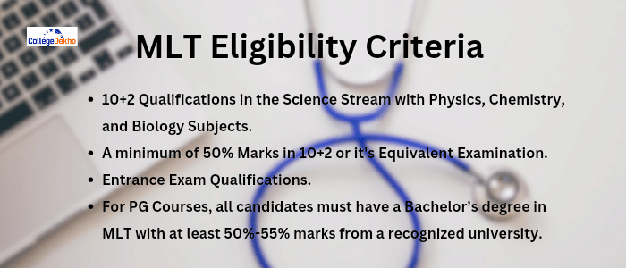
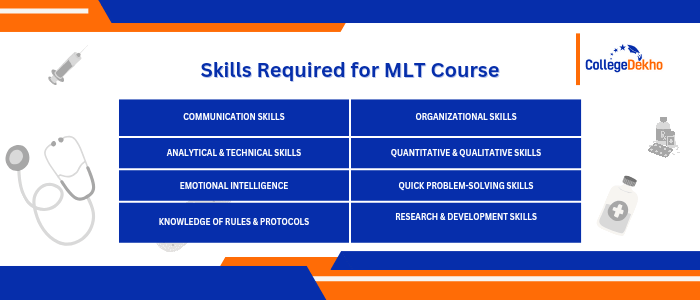
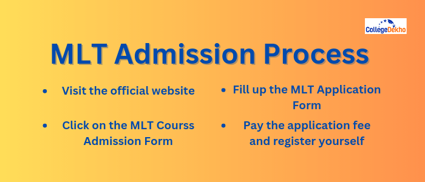
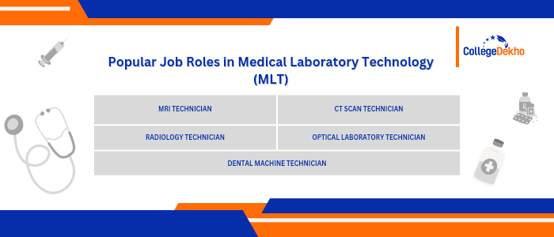

- We’re on your favourite socials!


MLT course
 Save
Save Request a callback
Request a callback Ask us
Ask us
MLT course is a professional field wherein students are trained to work in clinical laboratories where their role is to diagnose, treat and prevent diseases. The MLT Course can be pursued at the diploma, undergraduate and the postgraduate levels. MLT Course is a 3-year UG programme.
MLT Course Overview
MLT course or the Medical Laboratory Technology Course is a professional undergraduate degree that lasts for a span of 3 years, which focuses mainly on teaching students to perform laboratory investigations related to diagnosis, treatment and prevention of diseases. The students are eligible to apply for the MLT Programme for a bachelor’s once they are finished with their 10+2 in the Science stream with their core subjects as Physics, Chemistry and Biology. MLT Course eligibility criteria rests on a student attaining at least 50% marks at the 10+2 level in order to take up this course in their bachelor’s. Under this course, the students learn to aid physicians to come up with a proper plan for the treatment of a patient.
Aspiring candidates must take up MLT Course Entrance exams to stand eligible for admissions in this undergraduate programme. The candidates must go through entrance examinations such as JEE Mains, JEE Advanced, JNUEE, etc, as the admission process for this course is done on the basis of these examinations. If the candidates wish to ace these entrance exams by hitting the cut-offs and get admission in their desired college/university,they should further check out MLT Course Subjects to get a clarity on the structure of the course. In case you are one of the aspirants and wish to take a glance at the preparation tips for these entrance exams, look no further. Click on preparation tips for JEE Mains to access the ideal schedule of study. The course fee for MLT ranges between INR 20,000 to INR 4 LPA approximately.
Manipal Academy of Higher Education, Jamia Hamdard University, King’s George Medical University, Christian Medical College, Government Medical College, etc. are some of the best colleges to complete a course in medical laboratory technology. Popular job opportunities for MLT Course graduates are MRI Technicians, CT Scan Technicians, Pathology Technician, Optical Laboratory Technician, Dental Machine Technician, X-Ray Technicians, Research Associates, Radiology Technician, Laboratory Manager and many more equivalent jobs in similar fields across the country. The average salary of a graduate of MLT Course falls between INR 2,00,000 to INR 4,00,000 per annum. Various health centres, hospitals and nursing homes are always in search of laboratory scientists so that they can fulfil all of the above-mentioned criterias.
MLT Course Latest Update
- AIIMS Paramedical Exam notification for the session 2025-2026 is out now. Click at AIIMS BSc Paramedical Exam 2025 to know about this exam’s eligibility criteria, syllabus, and more.
- NTA is expected to announce the dates for NEET UG 2025 exam soon. To know more about this exam, expected dates, syllabus, preparation tips and more, click at NEET 2025 Exam.
- The official notification for PGIMER Paramedical Exam is yet to be released. To know more about this exam, preparation tips, syllabus highlights, click at PGIMER Paramedical Exam.
MLT Course Highlights
Mentioned below in the table are the important highlights of MLT course undergraduate degree, comprising all the necessary information for a student to understand the course details, its scope, and opportunities :
| Course Title | Medical Laboratory Technology |
|---|---|
| Alternatively Known As | MLT Course |
| MLT Course Duration | 3 years |
| MLT Course Eligibility | Students with a minimum score of 50% in 10+2 from a recognized board of education in the Science stream. |
| MLT Course Admission | Entrance - exam based |
| Examination Type | Semester-based exams are conducted |
| MLT Course Fee (Average) | INR 20,000 to INR 4 LPA |
| MLT Course Salary (Average) | INR 2 LPA to INR 4 LPA |
| Popular Job Roles |
|
| Top Recruiting Companies |
|
Table of Contents
- MLT Course Overview
- MLT Course Latest Update
- MLT Course Highlights
- Why Choose an MLT Course?
- MLT Course Comparison
- Types of MLT Course
- MLT Courses Eligibility Criteria
- MLT Course Entrance Exams
- MLT Course Admission Process
- What is MLT Course Fee?
- MLT Course Subjects
- Medical Laboratory Technology (MLT Course) Syllabus
- Top MLT Course Colleges in India
- State-wise MLT Course Colleges in India
- Top Private MLT Course Colleges in India
- Top Government MLT Course Colleges in India
- MLT Course Colleges Abroad
- MLT Course Scope in India
- Career Opportunities in MLT Course
- Courses After MLT
- FAQs about MLT Course
Why Choose an MLT Course?
While students may often wonder whether opting for a course in Medical Laboratory Technology is worthwhile in terms of the career prospects it offers, it is important to note that choosing MLT as a bachelor’s programme is completely upon individual interest, in addition to the advantages and disadvantages. Therefore, candidates who wish to study Medical Laboratory Technology must keep in mind that they should be aware of the scope of a course in medical laboratory technology before applying. The eligibility criteria for MLT course admission are that candidates must have qualified their 10+2, with a Science background and at least a minimum of 50% marks. The minimum age requirement for an MLT course is 17 years. Additionally, students pursuing a course in MLT have options across all aspects of allied health services. Some of the reasons for students to choose medical laboratory courses are mentioned below in detail :
- Constantly In-Demand in the Healthcare Industry: The ever growing healthcare industry is a constant reminder of the need for proper Medical assistance in treating patients. Thus, with a growth rate of about 18% annually, trained technicians are always in-demand all over the world. The onset of multiple and complicated diseases growing in the world due to changing lifestyles has created a huge demand for skilled MLT professionals.
- Multiple Work Opportunities: Once a student gets a degree in MLT, he/she is flooded with an ocean of opportunities in global job markets in the field of medical sciences. They become eligible to work across hospitals, clinics, laboratories, pathology labs, blood and organ banks, diagnostic centres, etc.
- Career Opportunities Abroad: The international medical industry has a huge demand for allied health science professionals, especially MLT professionals. Therefore, the career opportunities available abroad for MLT graduates are enormous. The salary package offered abroad is high and the work environment is even much better.
- High Salary Packages: With the increase in demand for MLT professionals in the healthcare industry, the salary packages offered to them are pretty decent. They are valued for their skills and recruiting organisations are ready to pay excellent salary packages for the right candidates.
- Flexibility at the Workplace: Medical Laboratory Technicians work in a wide range of facilities including hospitals, clinics, laboratories, pathology labs, diagnostic centres and more. Candidates can choose to work in a setting that they enjoy the most. Depending on the organisation, they can also choose the schedule for working according to their needs such as weekdays, nights or even weekends.
When To Do MLT Course?
Students who want to pursue a degree in the Medical Laboratory Technology course, are required to satisfy all the eligibility criteria to successfully complete the admission process. All eligible candidates should have completed their Class 10th and 12th, or their equivalent from a recognised board, with a Science background. The minimum required age criteria is 17 years of age.
Who Should Pursue MLT Course?
Students who want to build a career in the medical field can pursue a course in Medical Laboratory Technology after their 10+2 or its equivalent. Anybody with an interest in modern science and technologies can pursue an undergraduate programme in MLT, securing high-paying job roles after graduating from the same. A graduate from the MLT field can find job roles such as CT scan technician, MRI Technician, Pathology Technician, Optical Laboratory Technician, Dental Machine Technician, X-ray Technicians, Laboratory Technician, Medical Officer, Radiology Technician, Laboratory Manager, Research Associate, and more.
MLT Course Comparison
Mentioned below are the key differences between the different types of courses available in Medical Laboratory Technology :
| Particulars | DMLT | BSc MLT | MLTMSc |
|---|---|---|---|
| Full Form | Diploma in Medical Laboratory Technology | Bachelor of Science in Medical Laboratory Technology | Master of Science in Medical Laboratory Technology |
| Course Details | For candidates who wish to pursue learning about the diagnosis of different components associated with illness prevention and treatment. | For candidates who wish to pursue learning about numerous procedures, treatments, and illness preventive techniques used in clinical laboratories. | It is a two-year postgraduate programme for candidates who wish to pursue a career as a medical lab technician. |
| Eligibility | The candidate must have cleared their 12th with an aggregate of 45-50% with Physics, Chemistry, and Biology as compulsory subjects. | The candidate must have qualified their 12th with 50% with Physics, Chemistry, Mathematics, and Biology as compulsory subjects. | The candidate must have secured a minimum of 55% in their BSc MLT or BMLT or equivalent course. |
| MLT Admission Process | Entrance Exam | Entrance Exam | Entrance Exam & Merit Based |
| MLT Fees | INR 20,000 to INR 80,000 | INR 50,000 to INR 4 LPA | INR 5 LPA to INR 12 LPA |
| Career Prospects | Lab Assistant, Health Care Assistant, Laboratory System Analyst, Health and Safety Assistant, Educational Consultant, Hospital Outreach Coordinator etc. | Medical Laboratory Technician, Clinical Laboratory Technician, Phlebotomist, Clinical Laboratory Technologist, Medical Laboratory Technologist, Lab Technologist, Biochemist, Medical Phlebotomist etc. | Laboratory Manager, Healthcare Administrator, Hospital outreach coordinator, Lab Technician, Biomedical Analyst, Sample Analyst, etc. |
| MLT Salary | INR 3 LPA to INR 6 LPA | INR 5 LPA to INR 10 LPA | INR 6 LPA to INR 15 LPA |
Types of MLT Course
MLT courses can be divided into a total of three categories :
- Certificate Courses: It is a short term course with a duration of 3 to 6 months which varies from one institution to another, depending on various factors. It focuses on topics such as prevention, diagnosis and treatment of diseases through a clinical laboratory test.
- Diploma courses: Also known as DMLT, it is a 2-year programme that can usually be completed after passing Class 12th. It is a paramedical course that focuses on diagnosing, treating, and preventing disease using clinical laboratory and other physical tests.
- Degree courses: Also known as DMLT, it is a 2-year programme that can usually be completed after passing Class 12th. It is a paramedical course that focuses on diagnosing, treating, and preventing disease using clinical laboratory and other physical tests.
MLT Courses Eligibility Criteria

Different course types have different eligibility criteria for MLT Courses. In some courses, the candidates can pursue them right after their Class 10th gets over, in other cases, there is a minimum requirement of Class 12th qualification or its equivalent. However, from the following table below, we can understand the general eligibility requirements for a bachelor’s course in MLT :
- All candidates must have scored a minimum of 50% marks in aggregate in their Class 10 and Class 12
- All candidates must have had PCM or PCB as their core subjects in Class 12 or its equivalent
- It is required for all the candidates to have qualified for the entrance exams for admission to MLT Courses.
- A Bachelor’s degree in MLT is required with at least 50%-55% marks from a recognised university for all the candidates.
Required Skill Set for Medical Laboratory Technology
Some of the essential skills required to complete a course in medical laboratory technology are mentioned below :

MLT Course Entrance Exams
MLT Course entrance exams are conducted by the institutes for admission to various courses. The total marks of the question paper is 100, and all questions are usually in both MCQ and Subjective formats. The question paper contains the following sections: Qualitative Ability, Communicative Ability, Logical Ability, General Knowledge and Current affairs and Science related subjects.
Some of the popular entrance exams to the MLT course are listed below :
| Exam | Date |
|---|---|
| AIIMS Paramedical | 28th June, 2025 |
| NEET UG | TBA |
| PGIMER Paramedical | TBA |
| JNUEE | TBA |
MLT Course Admission Process

- The first and foremost criteria for admission to the MLT course is to secure the required percentage in Class 10+2 or its equivalent, and qualify the entrance examinations.
- In order to apply for admission, candidates are required to visit the official websites of the institutes they desire to apply for, and fill in the application form for admission.
- To secure a seat in their desired institute, the candidate must pay the registration fee/admission fee in time. The candidate is advised to keep all the necessary documents handy while filling the form. The selection process to the medical laboratory technology course will be done on the basis of the marks obtained by each candidate in the entrance examination. Students can stay up-to-date with the results, cut-offs and more by regularly visiting the official website of the college.
Also Read: MLT Admission in India
What is MLT Course Fee?
A detailed structure of the MLT Course fee structure is mentioned below for different courses, along with their average course fee for both private and government colleges :
| Course Type | Average MLT Course Fee |
|---|---|
| For Undergraduate Courses | INR 2 LPA to INR 3 LPA |
| For Post-Graduate | INR 1 LPA to INR 4 LPA |
| For Certificate Courses | INR 15,000 to INR 1 LPA |
| For Diploma Courses | INR 15,000 to INR 1.5 LPA |
MLT Course Subjects
MLT course subjects contain all the knowledge of the important topics and concepts about Medicine, Hospitals, and different theories that are vital to study the Medical Laboratory Technology course. The course is widely divided into core subjects and elective subjects. Mentioned below in the table are some of the important subjects that a student must study under this course :
| MLT Subjects | |
|---|---|
| Biochemistry | Clinical Haematology |
| Immunohematology and Blood Banking | Parasitology and Virology |
| Pathology | Microbiology |
| Histopathology and Histotechniques | Immunology and Serology |
| Human Physiology | PC Software Lab |
| Communication Lab | Human Anatomy |
| Clinical Enzymology and Automation | Principles of Lab Management and Medical Ethics |
| Health Education and Health Communication | Bio-Medical Waste Management |
| Clinical Enzymology | Diagnostic Cytology |
| Clinical Endocrinology and Toxicology | Diagnostic Molecular Biology |
| Advanced Diagnostic Techniques | |
Medical Laboratory Technology (MLT Course) Syllabus
First Year MLT Course Syllabus
| Semester I | Semester II | ||
|---|---|---|---|
| Human anatomy-I | Human Physiology-I | Human Physiology II | Biochemistry II |
| Biochemistry-I | Health Education & Health Communication | Bio-Medical Waste Management | Practical: Human Physiology-II |
| Human Physiology Lab-I | Human Anatomy Lab-I | Human Anatomy-II | Practical: Biochemistry-I |
| PC Software Lab | Biochemistry Lab-I | Communication Lab | |
Second Year MLT Course Syllabus
| Semester III | Semester IV | ||
|---|---|---|---|
| Pathology-I | Clinical Haematology-I | Pathology-II | Clinical Haematology-II |
| Microbiology-I | Microbiology, Immunology & Serology-I Lab | Microbiology-II | Immunology & Serology-II |
| Immunology & Serology-I | Histopathology & Histotechniques-I | Histopathology & Histotechniques-II | Clinical Haematology Lab-II |
| Clinical Haematology Lab-I | Histopathology & Histotechniques-I Lab | Microbiology, Immunology & Serology lab-II | Histopathology & Histotechniques Lab-II |
Third Year MLT Course Syllabus
| Semester V | Semester VI | ||
|---|---|---|---|
| Immunohematology & Blood Banking | Clinical Enzymology & Automation | Clinical Endocrinology | Advanced Diagnostic Techniques |
| Parasitology & Virology | Diagnostic Cytology | Diagnostic Molecular Biology | Clinical Endocrinology |
| Principles of Lab Management & medical Ethics | Clinical Enzymology Lab | Advanced Diagnostic Techniques Lab | Diagnostic Molecular Biology Lab |
| Parasitology & Virology Lab | Diagnostic Cytology | ||
Top MLT Course Colleges in India
A course in medical laboratory technology is offered by many reputed colleges and universities across the country. Some of these colleges with the courses they offer are listed below :
| College/ University | MLT Course Offered |
|---|---|
| All India Institute of Public and Physical Health Sciences | Certificate Course in Medical Laboratory Technology |
| Bidar Institute of Medical Science | |
| GMR Varalakshmi Community College | |
| IASE University | |
| Jaya College of Art and Science | |
| Sardar Patel University | Diploma in Medical Laboratory Technology |
| Government Polytechnic, Lisana | |
| DIPS College, Nainital | |
| Rajeev Gandhi College, Bhopal | |
| Calcutta National Medical College, Kolkata | |
| Manipal Academy of Higher Education, Manipal | Bachelor in Medical Laboratory Technology |
| Jamia Hamdard University, New Delhi | |
| King’s George Medical University , Lucknow | |
| SRM Institute of Technology, Tamil Nadu | |
| Chandigarh University, Chandigarh | |
| Government Medical College, Kerala | |
| Bangalore Medical College and Research Institute, Bangalore | |
| Sri Ramachandra Institute of Higher Education and Research, Chennai | Masters in Medical Laboratory Technology |
| Jamia Hamdard University, New Delhi | |
| Saveetha Medical College, Chennai | |
| Manipal Academy of Higher Education, Manipal | |
| Chandigarh University, Chandigarh |
State-wise MLT Course Colleges in India
Here is the state-wise distribution of all the popular colleges in India that offer MLT courses to students:
West Bengal
Some of the popular colleges in West Bengal offering MLT degree programme to students are as follows :
| College/University | City |
|---|---|
| Institute of Post Graduate Medical Education and Research | Kolkata |
| Paramedical College | Durgapur |
| Institute of Advance Education and Research | Kolkata |
| Brainware University | Kolkata |
| ILEAD | Kolkata |
Andhra Pradesh
Popular MLT colleges in Andhra Pradesh are as follows:
| College/University | City |
|---|---|
| MIMS | Vizianagaram |
| NRI Medical College | Guntur |
| Government Medical College | Guntur |
| Sri Venkateshwara Institute of Medical Sciences | Tirupati |
| Hindu College | Guntur |
Delhi
There are several colleges in Delhi that offer MLT degree to students. Some of the popular choices are listed below:
| College/University | City |
|---|---|
| All India Institute of Medical Science | New Delhi |
| Om Paramedical and Technical Institute | New Delhi |
| Ashray Institute of Paramedical Sciences | New Delhi |
| Max Healthcare Education | New Delhi |
| Delhi Paramedical and Management Institute | New Delhi |
Top Private MLT Course Colleges in India
Some of the top private MLT course colleges in India are mentioned below along with their NIRF Rankings 2024 :
Top Government MLT Course Colleges in India
Some of the top Government MLT course colleges are mentioned below along with their NIRF Rankings :
MLT Course Colleges Abroad
The scope of an MLT course is not only limited to India when it comes to better career opportunities with lucrative salary packages. Studying a course in MLT abroad necessarily implies that a student could gain access to the best programs and facilities the world has to offer. Courses in Medical Laboratory Technology aren’t offered in many countries, so therefore, some of the popular universities and colleges abroad which offer courses in this medical field abroad are listed below :
- Northern Alberta Institute of Technology, Canada
- Maryville University, USA
- University of South Australia, Australia
- University of Cincinnati, USA
- Virginia Commonwealth University, USA
- Queensland University of Technology, Australia
- University of New Brunswick, Canada
MLT Course Scope in India
In India, there is a significantly high amount of demand for medical laboratory technicians or technologists which can be enough to support a wide range of applications and specializations. Moreover, the scope for MLT in India is growing rapidly and will likely continue to rise in the future.
- As the scope of the medical laboratory technology course is becoming broader with each passing year, with a degree in this field, a person can find employment in a variety of industries all around the globe.
- In today’s time, a career in the field of Medical Laboratory technology is one of the most challenging and also rewarding at the same time. Every day is a new opportunity to learn something new in this field.
- There’s a lot of variety of settings to work in for the Medical Laboratory Technicians such as pathology labs, research labs, urologist offices, pharmaceutical companies, hospitals, and a variety of other settings.
- Apart from the options mentioned above, a candidate also has options to work as a lecturer or a teacher in the education field.
- Over time, the growth in the MLT Course in terms of what a student learns in the course has been exponential, which also broadens the scope for the candidates overall.
- There are several parts of the Medical Laboratory Technology sector like clinical chemistry, haematology, immunology, blood banking, microbiology, cytotechnology, urinalysis and blood sampling. There’s a lot of options to choose from for the graduates to find acceptable employment.
- There’s a lot of variety of work aspects for MLT Professionals. Every hospital and healthcare facility needs clinical lab technologists, to detect issues and diseases that make patients sick.
- Professionals who have gathered a lot of experiences over the years, also have the option to work as self-employed, which is a high income option.
The healthcare industry is growing almost at a rate of 18% annually. Therefore, trained technicians are needed all over the country.
Career Opportunities in MLT Course

There are many career options available for students who graduate in Medical Laboratory Technology. A candidate can work at various profiles after completing a course in MLT. Some of the popular job profiles along with their job description are tabulated below :
| Job Profiles | Job Description |
|---|---|
| Lab Technician | A lab technician works in a laboratory performing analytical or experimental procedures, maintaining lab equipment. |
| Medical Record Technician | A Medical Record Technician maintains medical records operations by following policies and procedures, reporting needed changes. They also initiate medical records by searching master patient index, ensure medical record availability by routing records to emergency departments, etc. |
| Lab Assistant | A Lab Assistant takes notes, records data and results, and organises documentation and data transfer to computer formats. They organise and maintain lab storage, samples, etc. Lab Assistants follow all health and safety regulations when handling laboratory specimens. They identify and label samples and prepare equipment and workspace. |
| Laboratory Manager | The Lab Manager's responsibilities involve conducting testing in a timely manner, personally reviewing any abnormal results to find the root of the irregularity, etc. The laboratory quality manager also hires and manages staff, ensuring all employees are receiving proper training. |
| Anaesthesia Technician | Anaesthesia Technicians help anaesthesiologists or other medical staff in cleaning, preparing and maintaining anaesthesia equipment for use in a surgical procedure. |
| MRI Technician | MRI Technicians run MRI (Magnetic Resonance Imaging) scanners at hospitals and diagnostic facilities, working directly with patients and explaining to them what to expect and understand from the results, giving drugs to patients for better contrast on scanned images. |
| Pathology Technician | Pathology Technicians perform lab tests on human cells, fluids and tissues to diagnose illnesses. They also assist pathologists and work with chemicals and lab machinery. |
| CT Scan Technician | They use Computerised Tomography (CT) scanners to produce cross-sectional images of the internal organs of a patient to detect medical issues. |
| X-ray Technician | X-ray Technicians work on imaging methods by using cutting-edge technology to view the inside of the human body, create pictures to help physicians diagnose and treat injuries or health complications. |
| Operation Theatre technician | They maintain and prepare the operation theatre and the necessary equipment for operations. They also assist surgical and anaesthetic teams during operations and provide support to patients in recovery. |
MLT Course : Salary Insights
The annual salary of a graduate in the course of medical laboratory technology available to candidates who have completed an MLT course depends on various factors like the recruiting organisations, work experience, qualifications, etc. However, the average annual salary of popular job profiles can be understood from the following table :
| Job Profiles | Average Annual Salary (INR) |
|---|---|
| Lab Technician | INR 2.8 LPA |
| Medical Record Technician | INR 4 LPA |
| Lab Assistant | INR 2.6 LPA |
| Laboratory Manager | INR 4 LPA |
| Anaesthesia Technician | INR 4 LPA |
| MRI Technician | INR 2.7 LPA |
| Pathology Technician | INR 2.3 LPA |
| CT Scan Technician | INR 3.5 LPA |
| X-ray Technician | INR 2 LPA |
| Operation Theatre Technician | INR 3 LPA |
Top MLT Course Recruiters
Some of the top recruiting agencies for the medical laboratory technology course graduates are listed below :
- All India Institute of Medical Sciences (AIIMS)
- Forensic Science Laboratory
- Apollo
- Batra Hospital and Medical Research Centre, Delhi
- Columbia Asia Referral Hospital
- Manipal Hospital
- Fortis
- Lilavati Hospital, Mumbai
- Paramount Health Services
- Cactus Global
Courses After MLT
Mentioned below are some of the courses to pursue after successfully completing a degree in MLT:
| Course Title | Course Duration | Course Fee |
|---|---|---|
| Post Graduate Diploma (PGD) in Medical Laboratory Technology | 2 Years | INR 2 LPA |
| Post Graduate Diploma (PGD) in Laboratory Services in Science | 1 Year | INR 6 LPA |
| Post Graduate Diploma (PGD) in Radio-diagnostics | 1 Year | INR 12 LPA |
| Post Graduate Diploma (PGD) in Dialysis Technician Training | 2 Year | INR 10 LPA |
FAQs about MLT Course
What is CMLT?
CMLT is the course of Certificate in Medical Laboratory Technology which can be pursued after class 10th.
What is the average salary of an MLT graduate?
The starting salary of an MLT graduate can be INR 30,000 per month which can rise up to 50,000 with an increase in experience.
Can I do DMLT after class 10th?
No, only the candidates who have passed class 12th can apply for the DMLT course.
What is the duration of Diploma in Medical Laboratory Technology?
The duration of DMLT in India is 2 years.
What is the eligibility of MLT course at the UG level?
To be eligible for MLT bachelor level courses, a candidate must have completed 12th with science subjects and with a minimum of 50% marks from a recognized board.
What is the full form of MLT?
The full form of MLT is Medical Laboratory Technology.
Related Questions
Related Articles


Popular Courses
- Courses
- MLT Course